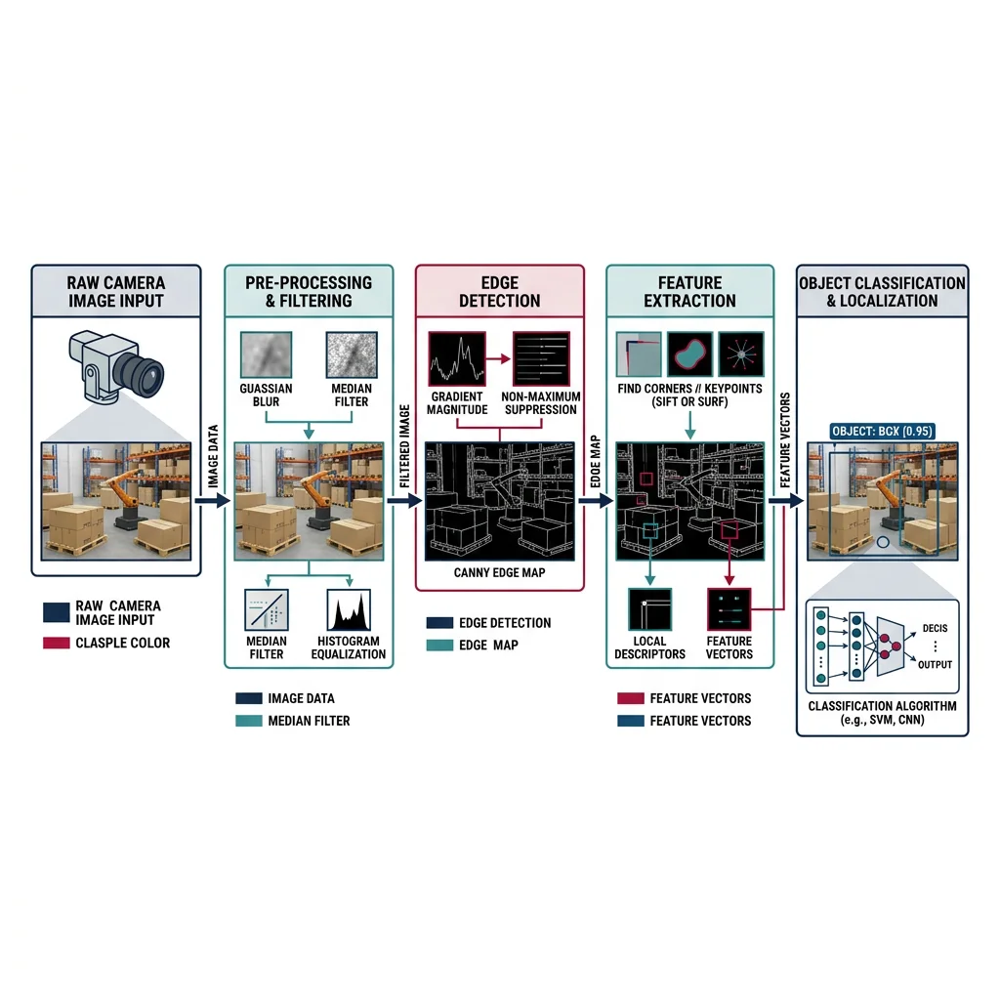
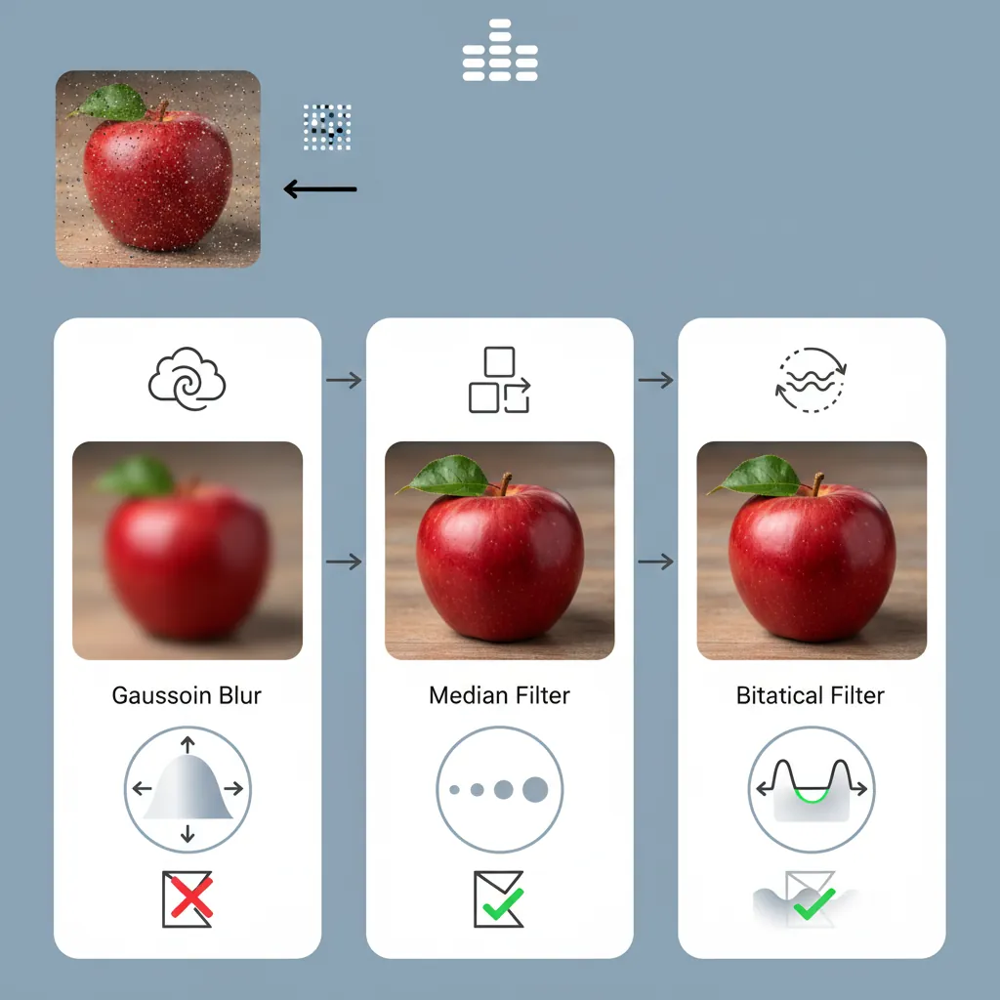
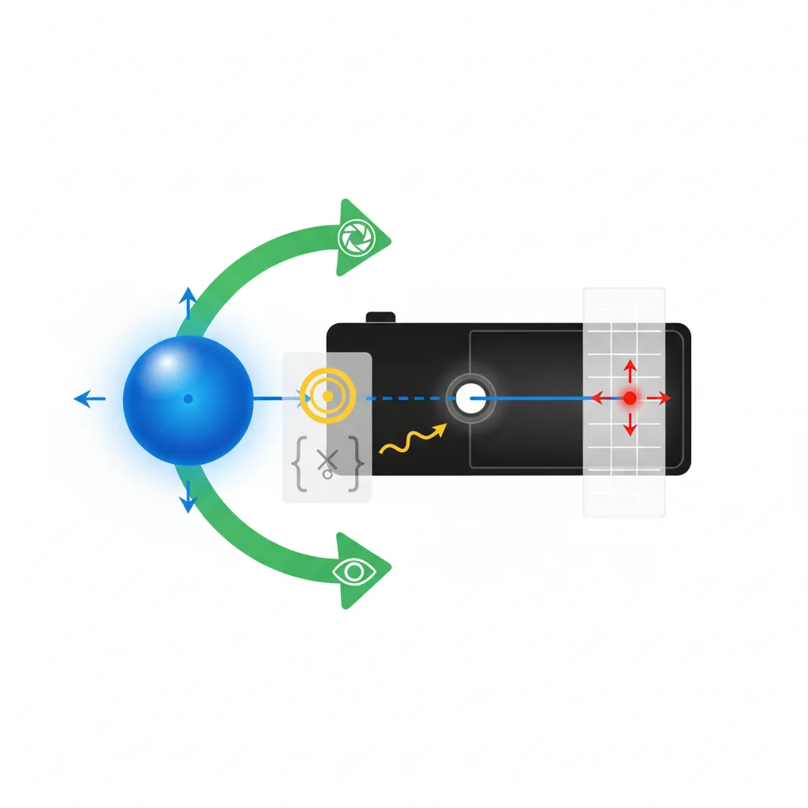
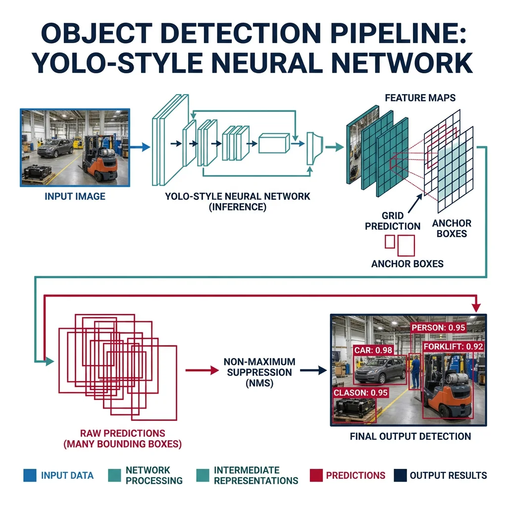
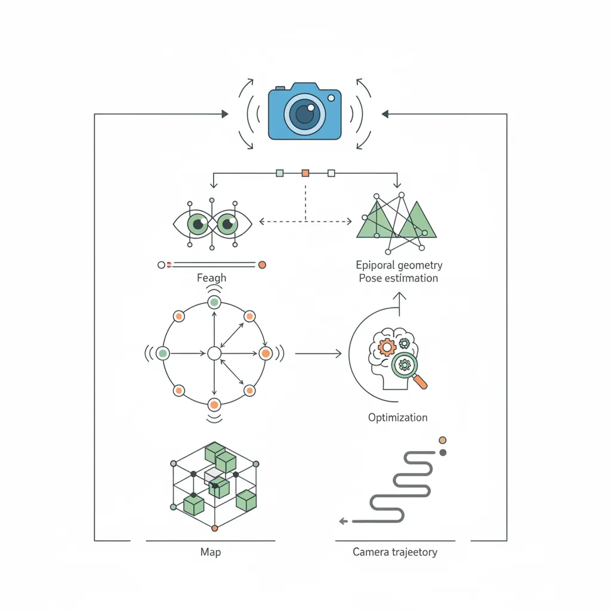

Image Processing Fundamentals
Robotics & Automation Mastery
Introduction to Robotics
History, types, DOF, architectures, mechatronics, ethicsSensors & Perception Systems
Encoders, IMUs, LiDAR, cameras, sensor fusion, Kalman filters, SLAMActuators & Motion Control
DC/servo/stepper motors, hydraulics, drivers, gear systemsKinematics (Forward & Inverse)
DH parameters, transformations, Jacobians, workspace analysisDynamics & Robot Modeling
Newton-Euler, Lagrangian, inertia, friction, contact modelingControl Systems & PID
PID tuning, state-space, LQR, MPC, adaptive & robust controlEmbedded Systems & Microcontrollers
Arduino, STM32, RTOS, PWM, serial protocols, FPGARobot Operating Systems (ROS)
ROS2, nodes, topics, Gazebo, URDF, navigation stacksComputer Vision for Robotics
Calibration, stereo vision, object recognition, visual SLAMAI Integration & Autonomous Systems
ML, reinforcement learning, path planning, swarm roboticsHuman-Robot Interaction (HRI)
Cobots, gesture/voice control, safety standards, social roboticsIndustrial Robotics & Automation
PLC, SCADA, Industry 4.0, smart factories, digital twinsMobile Robotics
Wheeled/legged robots, autonomous vehicles, drones, marine roboticsSafety, Reliability & Compliance
Functional safety, redundancy, ISO standards, cybersecurityAdvanced & Emerging Robotics
Soft robotics, bio-inspired, surgical, space, nano-roboticsSystems Integration & Deployment
HW/SW co-design, testing, field deployment, lifecycleRobotics Business & Strategy
Startups, product-market fit, manufacturing, go-to-marketComplete Robotics System Project
Autonomous rover, pick-and-place arm, delivery robot, swarm simComputer vision is what gives a robot the ability to "see." But unlike human vision — which effortlessly recognizes objects, judges distances, and navigates complex environments — a robot starts with nothing but a grid of pixel values. The challenge is transforming those raw numbers into actionable understanding: "There's a red ball 2.3 meters away at 35° to my left."

Image Representation
Every digital image is a 3D array: height × width × channels. Understanding this data structure is step one of any vision pipeline:
import numpy as np
import cv2
# === Image Basics ===
# Create a 480×640 BGR image (OpenCV default is BGR, not RGB)
image = np.zeros((480, 640, 3), dtype=np.uint8)
# Draw shapes for testing
cv2.rectangle(image, (100, 100), (300, 300), (0, 255, 0), 2)
cv2.circle(image, (400, 200), 80, (0, 0, 255), -1)
cv2.putText(image, 'Robot Vision', (150, 420),
cv2.FONT_HERSHEY_SIMPLEX, 1.5, (255, 255, 255), 2)
print(f"Image shape: {image.shape}") # (480, 640, 3)
print(f"Data type: {image.dtype}") # uint8 [0-255]
print(f"Total pixels: {image.shape[0] * image.shape[1]}") # 307,200
# Color space conversions
gray = cv2.cvtColor(image, cv2.COLOR_BGR2GRAY) # 1 channel
hsv = cv2.cvtColor(image, cv2.COLOR_BGR2HSV) # Hue-Saturation-Value
lab = cv2.cvtColor(image, cv2.COLOR_BGR2LAB) # Perceptually uniform
print(f"Grayscale shape: {gray.shape}") # (480, 640)
print(f"HSV shape: {hsv.shape}") # (480, 640, 3)Filtering & Enhancement
Real-world images are noisy — sensor noise, motion blur, uneven lighting. Filtering is the process of cleaning up images before analysis:

import numpy as np
import cv2
# Create a noisy image (simulating real sensor data)
clean = np.zeros((200, 200), dtype=np.uint8)
cv2.circle(clean, (100, 100), 60, 255, -1)
noise = np.random.normal(0, 30, clean.shape).astype(np.int16)
noisy = np.clip(clean.astype(np.int16) + noise, 0, 255).astype(np.uint8)
# === Smoothing Filters ===
# Gaussian Blur — reduces noise while preserving edges somewhat
gaussian = cv2.GaussianBlur(noisy, (5, 5), sigmaX=1.5)
# Median Filter — excellent for salt-and-pepper noise
median = cv2.medianBlur(noisy, 5)
# Bilateral Filter — smooths while preserving edges (slow but powerful)
bilateral = cv2.bilateralFilter(noisy, d=9, sigmaColor=75, sigmaSpace=75)
# === Morphological Operations (for binary images) ===
_, binary = cv2.threshold(gaussian, 127, 255, cv2.THRESH_BINARY)
kernel = cv2.getStructuringElement(cv2.MORPH_ELLIPSE, (5, 5))
# Erosion: shrinks white regions (removes small noise)
eroded = cv2.erode(binary, kernel, iterations=1)
# Dilation: expands white regions (fills small holes)
dilated = cv2.dilate(binary, kernel, iterations=1)
# Opening: erosion then dilation (removes noise while preserving shape)
opened = cv2.morphologyEx(binary, cv2.MORPH_OPEN, kernel)
# Closing: dilation then erosion (fills holes while preserving shape)
closed = cv2.morphologyEx(binary, cv2.MORPH_CLOSE, kernel)
print("Filter shapes match:", gaussian.shape == median.shape == bilateral.shape)Edge & Corner Detection
Edges represent boundaries between regions — crucial for detecting objects, walls, and obstacles. Corners are stable features ideal for tracking and matching.
import numpy as np
import cv2
# Create test image with geometric shapes
image = np.zeros((300, 300), dtype=np.uint8)
cv2.rectangle(image, (50, 50), (150, 150), 200, -1)
cv2.circle(image, (220, 120), 50, 180, -1)
# === Canny Edge Detection ===
# Best general-purpose edge detector
edges = cv2.Canny(image, threshold1=50, threshold2=150)
# === Sobel Gradient (directional edges) ===
sobel_x = cv2.Sobel(image, cv2.CV_64F, 1, 0, ksize=3) # Horizontal
sobel_y = cv2.Sobel(image, cv2.CV_64F, 0, 1, ksize=3) # Vertical
gradient_magnitude = np.sqrt(sobel_x**2 + sobel_y**2)
gradient_direction = np.arctan2(sobel_y, sobel_x)
# === Harris Corner Detection ===
corners = cv2.cornerHarris(image.astype(np.float32), blockSize=2, ksize=3, k=0.04)
corner_mask = corners > 0.01 * corners.max()
num_corners = np.sum(corner_mask)
# === Shi-Tomasi "Good Features to Track" ===
good_corners = cv2.goodFeaturesToTrack(image, maxCorners=20,
qualityLevel=0.01, minDistance=10)
print(f"Canny edges: {np.sum(edges > 0)} edge pixels")
print(f"Harris corners: {num_corners}")
print(f"Shi-Tomasi corners: {len(good_corners) if good_corners is not None else 0}")Camera Calibration & Stereo Vision
A camera transforms 3D world points into 2D image pixels — but this transformation introduces distortion. Calibration determines the camera's internal parameters (focal length, principal point, distortion coefficients) so we can undo these distortions and make accurate 3D measurements.

In an ideal pinhole camera, a 3D point $P = (X, Y, Z)$ projects to pixel $(u, v)$ via:
$$\begin{bmatrix} u \\ v \\ 1 \end{bmatrix} = \frac{1}{Z} \begin{bmatrix} f_x & 0 & c_x \\ 0 & f_y & c_y \\ 0 & 0 & 1 \end{bmatrix} \begin{bmatrix} X \\ Y \\ Z \end{bmatrix}$$
where $f_x, f_y$ are focal lengths in pixels, $(c_x, c_y)$ is the principal point, and $Z$ is depth.
import numpy as np
import cv2
import glob
# === Camera Calibration using Checkerboard ===
# Prepare object points (3D points in checkerboard frame)
CHECKERBOARD = (9, 6) # Inner corners per row/column
square_size = 0.025 # 25mm squares
objp = np.zeros((CHECKERBOARD[0] * CHECKERBOARD[1], 3), np.float32)
objp[:, :2] = np.mgrid[0:CHECKERBOARD[0], 0:CHECKERBOARD[1]].T.reshape(-1, 2)
objp *= square_size
# Collect calibration images
object_points = [] # 3D points
image_points = [] # 2D points
# Simulate finding checkerboard corners in calibration images
# In practice: images = glob.glob('calibration_images/*.jpg')
# for fname in images:
# img = cv2.imread(fname)
# gray = cv2.cvtColor(img, cv2.COLOR_BGR2GRAY)
# ret, corners = cv2.findChessboardCorners(gray, CHECKERBOARD, None)
# if ret:
# corners_refined = cv2.cornerSubPix(gray, corners, (11, 11),
# (-1, -1), criteria)
# object_points.append(objp)
# image_points.append(corners_refined)
# Simulated calibration results (typical values)
camera_matrix = np.array([
[615.0, 0.0, 320.0], # fx, 0, cx
[ 0.0, 615.0, 240.0], # 0, fy, cy
[ 0.0, 0.0, 1.0] # 0, 0, 1
])
dist_coeffs = np.array([-0.28, 0.08, 0.001, -0.002, 0.0])
# [k1, k2, p1, p2, k3] — radial and tangential distortion
# Undistort an image
# undistorted = cv2.undistort(image, camera_matrix, dist_coeffs)
print("Camera Matrix (Intrinsic):")
print(camera_matrix)
print(f"\nFocal Length: ({camera_matrix[0,0]:.1f}, {camera_matrix[1,1]:.1f}) px")
print(f"Principal Point: ({camera_matrix[0,2]:.1f}, {camera_matrix[1,2]:.1f})")
print(f"Distortion: {dist_coeffs}")Stereo Vision — Depth from Two Eyes
Just as humans perceive depth through two eyes (binocular vision), a stereo camera pair can estimate depth by finding matching points between left and right images. The disparity (pixel difference) is inversely proportional to depth:
import numpy as np
import cv2
# === Stereo Vision Depth Estimation ===
# In practice, use rectified stereo pair from calibrated cameras
# Simulated stereo parameters
focal_length = 600.0 # pixels
baseline = 0.12 # meters (distance between cameras)
image_width = 640
image_height = 480
# Create stereo matcher (Semi-Global Block Matching)
stereo = cv2.StereoSGBM_create(
minDisparity=0,
numDisparities=128, # Must be divisible by 16
blockSize=5,
P1=8 * 3 * 5**2, # Smoothness penalty
P2=32 * 3 * 5**2, # Larger smoothness penalty
disp12MaxDiff=1,
uniquenessRatio=10,
speckleWindowSize=100,
speckleRange=32
)
# Compute disparity (in practice, from rectified left/right images)
# disparity = stereo.compute(left_rectified, right_rectified)
# disparity = disparity.astype(np.float32) / 16.0 # Fixed-point to float
# Convert disparity to depth
# depth = focal_length * baseline / (disparity + 1e-6)
# Simulated depth map
depth_map = np.random.uniform(0.5, 10.0, (image_height, image_width)).astype(np.float32)
# 3D reconstruction from depth
u, v = np.meshgrid(np.arange(image_width), np.arange(image_height))
cx, cy = image_width / 2, image_height / 2
X = (u - cx) * depth_map / focal_length
Y = (v - cy) * depth_map / focal_length
Z = depth_map
point_cloud = np.stack([X, Y, Z], axis=-1)
print(f"Point cloud shape: {point_cloud.shape}") # (480, 640, 3)
print(f"Depth range: {Z.min():.2f}m to {Z.max():.2f}m")Depth Estimation — Beyond Stereo
| Method | Range | Accuracy | Cost | Use Case |
|---|---|---|---|---|
| Stereo Camera | 0.5–30m | ±2% | $$ | Autonomous vehicles, drones |
| Structured Light | 0.1–4m | ±1mm | $$ | Pick-and-place, 3D scanning |
| Time-of-Flight (ToF) | 0.1–10m | ±1cm | $$$ | Indoor robots, gesture recognition |
| LiDAR | 0.2–200m | ±2cm | $$$$ | Self-driving cars, mapping |
| Monocular Depth (DNN) | 0–80m | Relative | $ | Drones, low-cost robots |
Case Study: Tesla's Vision-Only Approach
Tesla famously removed all radar and ultrasonic sensors from their vehicles in 2022, relying entirely on 8 cameras + neural networks for depth perception. Their approach:
- Multi-camera fusion — 8 surround cameras create a unified "bird's-eye view" 3D space
- Transformer architecture — attention-based neural networks fuse multi-view images into a 3D occupancy grid
- Self-supervised monocular depth — trained on millions of driving hours to estimate depth from single images
- Temporal fusion — uses video sequences (not single frames) to improve depth estimation via structure-from-motion
Trade-off: Lower hardware cost ($~50 vs $1000+ for LiDAR), but requires massive neural networks trained on petabytes of data.
Object Detection & Recognition
Detection answers "where are the objects?" (bounding boxes). Recognition answers "what are they?" (class labels). Together they form the perception backbone of any robot interacting with the world.

Feature Matching
Features are distinctive, repeatable patterns in images (corners, blobs, edges) that can be matched across different views. This is foundational for object recognition, visual odometry, and SLAM.
import numpy as np
import cv2
# === Feature Detection and Matching ===
# Create two test images (one rotated + scaled)
img1 = np.zeros((300, 300), dtype=np.uint8)
cv2.rectangle(img1, (80, 80), (220, 220), 200, -1)
cv2.circle(img1, (150, 150), 30, 100, -1)
cv2.putText(img1, 'R', (130, 170), cv2.FONT_HERSHEY_SIMPLEX, 1.5, 255, 3)
# Simulated transformed view
M = cv2.getRotationMatrix2D((150, 150), 15, 0.9)
img2 = cv2.warpAffine(img1, M, (300, 300))
# ORB Feature Detector (free, fast, rotation-invariant)
orb = cv2.ORB_create(nfeatures=500)
kp1, desc1 = orb.detectAndCompute(img1, None)
kp2, desc2 = orb.detectAndCompute(img2, None)
# Brute-Force Matcher with Hamming distance (for binary descriptors)
bf = cv2.BFMatcher(cv2.NORM_HAMMING, crossCheck=True)
matches = bf.match(desc1, desc2)
matches = sorted(matches, key=lambda x: x.distance)
print(f"Features in img1: {len(kp1)}")
print(f"Features in img2: {len(kp2)}")
print(f"Matches found: {len(matches)}")
print(f"Best match distance: {matches[0].distance:.1f}" if matches else "No matches")
# === Feature Detector Comparison ===
detectors = {
'ORB': cv2.ORB_create(500),
'AKAZE': cv2.AKAZE_create(),
'BRISK': cv2.BRISK_create()
}
for name, det in detectors.items():
kp, desc = det.detectAndCompute(img1, None)
desc_size = desc.shape[1] if desc is not None else 0
print(f"{name}: {len(kp)} keypoints, descriptor size={desc_size}")Deep Learning Object Detection
Modern robotics uses deep neural networks for object detection — dramatically outperforming classical methods in accuracy and generalization:
| Model | Speed (FPS) | Accuracy (mAP) | Best For |
|---|---|---|---|
| YOLOv8 | 80–400 | 53.9% | Real-time robotics, embedded |
| RT-DETR | 60–120 | 54.8% | High accuracy + real-time |
| Faster R-CNN | 5–15 | 42.0% | Research, high accuracy |
| SSD MobileNet | 100–200 | 22.0% | Ultra-low power (Coral, NCS) |
| SAM (Segment Anything) | 5–10 | N/A | Zero-shot segmentation |
import numpy as np
# Demonstrating YOLOv8 inference pattern (conceptual)
# In practice: pip install ultralytics
# === YOLOv8 Object Detection for Robotics ===
# from ultralytics import YOLO
# Load pre-trained model
# model = YOLO('yolov8n.pt') # nano (fastest)
# model = YOLO('yolov8s.pt') # small (balanced)
# model = YOLO('yolov8m.pt') # medium (accurate)
# Run inference
# results = model(image)
# Process detections for robot decision-making
# Simulated detection results
detections = [
{'class': 'person', 'confidence': 0.92, 'bbox': [100, 50, 250, 400],
'center': (175, 225), 'area': 52500},
{'class': 'chair', 'confidence': 0.87, 'bbox': [400, 200, 550, 450],
'center': (475, 325), 'area': 37500},
{'class': 'bottle', 'confidence': 0.78, 'bbox': [300, 150, 340, 280],
'center': (320, 215), 'area': 5200}
]
# Robot decision logic based on detections
for det in detections:
print(f"Detected: {det['class']} ({det['confidence']:.0%})")
if det['class'] == 'person' and det['confidence'] > 0.8:
print(f" -> STOP: Person at pixel ({det['center'][0]}, {det['center'][1]})")
elif det['class'] == 'bottle' and det['confidence'] > 0.7:
print(f" -> PICK: Graspable object at ({det['center'][0]}, {det['center'][1]})")Object Tracking
Detection finds objects per-frame; tracking maintains identity across frames ("that's the same ball from 0.5 seconds ago"). Essential for robots that interact with moving objects or people.
import numpy as np
# === Multi-Object Tracking (Simplified SORT Algorithm) ===
# SORT = Simple Online and Realtime Tracking
# Uses Kalman filter for prediction + Hungarian algorithm for assignment
class SimpleTracker:
"""Simplified object tracker using IoU matching."""
def __init__(self, max_lost=5):
self.tracks = {} # id -> {'bbox': [...], 'lost': 0}
self.next_id = 0
self.max_lost = max_lost
def iou(self, box1, box2):
"""Intersection over Union between two boxes [x1,y1,x2,y2]."""
x1 = max(box1[0], box2[0])
y1 = max(box1[1], box2[1])
x2 = min(box1[2], box2[2])
y2 = min(box1[3], box2[3])
inter = max(0, x2 - x1) * max(0, y2 - y1)
area1 = (box1[2] - box1[0]) * (box1[3] - box1[1])
area2 = (box2[2] - box2[0]) * (box2[3] - box2[1])
union = area1 + area2 - inter
return inter / union if union > 0 else 0
def update(self, detections):
"""Update tracks with new detections."""
matched = set()
for det_bbox in detections:
best_id, best_iou = None, 0.3 # IoU threshold
for tid, track in self.tracks.items():
score = self.iou(det_bbox, track['bbox'])
if score > best_iou:
best_id, best_iou = tid, score
if best_id is not None:
self.tracks[best_id]['bbox'] = det_bbox
self.tracks[best_id]['lost'] = 0
matched.add(best_id)
else:
self.tracks[self.next_id] = {'bbox': det_bbox, 'lost': 0}
self.next_id += 1
# Increment lost count for unmatched tracks
for tid in list(self.tracks.keys()):
if tid not in matched:
self.tracks[tid]['lost'] += 1
if self.tracks[tid]['lost'] > self.max_lost:
del self.tracks[tid]
return self.tracks
# Demo
tracker = SimpleTracker()
# Frame-by-frame detections (simulated moving objects)
frames = [
[[100, 100, 200, 200], [400, 150, 500, 250]],
[[110, 105, 210, 205], [405, 148, 505, 248]],
[[120, 110, 220, 210], [410, 146, 510, 246]],
]
for i, dets in enumerate(frames):
tracks = tracker.update(dets)
print(f"Frame {i}: {len(tracks)} active tracks")
for tid, t in tracks.items():
print(f" Track {tid}: bbox={t['bbox']}")Visual SLAM & Navigation
Visual SLAM (Simultaneous Localization and Mapping) answers two questions at once: "Where am I?" and "What does the world look like?" — using only camera images. This is the holy grail of visual navigation.

Optical Flow
Optical flow estimates pixel-level motion between consecutive frames — critical for visual odometry (estimating camera motion) and detecting moving objects:
import numpy as np
import cv2
# === Optical Flow — Lucas-Kanade (Sparse) ===
# Tracks specific feature points between frames
# Simulated previous and current frames
prev_frame = np.zeros((200, 200), dtype=np.uint8)
cv2.circle(prev_frame, (80, 80), 30, 200, -1)
curr_frame = np.zeros((200, 200), dtype=np.uint8)
cv2.circle(curr_frame, (90, 85), 30, 200, -1) # Circle moved right+down
# Find features to track in previous frame
prev_pts = cv2.goodFeaturesToTrack(prev_frame, maxCorners=50,
qualityLevel=0.3, minDistance=7)
if prev_pts is not None:
# Lucas-Kanade parameters
lk_params = dict(
winSize=(15, 15),
maxLevel=2,
criteria=(cv2.TERM_CRITERIA_EPS | cv2.TERM_CRITERIA_COUNT, 10, 0.03)
)
# Calculate optical flow
curr_pts, status, err = cv2.calcOpticalFlowPyrLK(
prev_frame, curr_frame, prev_pts, None, **lk_params)
# Filter good tracking results
good_prev = prev_pts[status.flatten() == 1]
good_curr = curr_pts[status.flatten() == 1]
# Calculate motion vectors
for p, c in zip(good_prev, good_curr):
dx = c[0][0] - p[0][0]
dy = c[0][1] - p[0][1]
speed = np.sqrt(dx**2 + dy**2)
print(f"Point ({p[0][0]:.0f},{p[0][1]:.0f}) -> "
f"({c[0][0]:.0f},{c[0][1]:.0f}), speed={speed:.1f}px")
# === Dense Optical Flow (Farneback) ===
flow = cv2.calcOpticalFlowFarneback(prev_frame, curr_frame, None,
pyr_scale=0.5, levels=3, winsize=15,
iterations=3, poly_n=5, poly_sigma=1.2, flags=0)
magnitude, angle = cv2.cartToPolar(flow[..., 0], flow[..., 1])
print(f"\nDense flow shape: {flow.shape}")
print(f"Mean motion: {magnitude.mean():.2f} pixels")Visual SLAM Frameworks
Case Study: ORB-SLAM3 — State-of-the-Art Visual SLAM
ORB-SLAM3 is the most complete visual SLAM system available, supporting monocular, stereo, and RGB-D cameras with or without IMU. Key architecture:
- Tracking thread — extracts ORB features, matches to map, estimates camera pose in real-time
- Local mapping thread — creates new map points, optimizes local structure via bundle adjustment
- Loop closing thread — detects revisited places (bag-of-words), corrects accumulated drift
- Atlas — manages multiple sub-maps for large-scale environments; supports map merging
Used by DJI drones, Boston Dynamics, and autonomous delivery robots for visual navigation without GPS.
| SLAM System | Sensor | Real-Time | Loop Closing | Best For |
|---|---|---|---|---|
| ORB-SLAM3 | Mono / Stereo / RGB-D + IMU | Yes | Yes | General purpose, research |
| RTAB-Map | RGB-D / Stereo / LiDAR | Yes | Yes | ROS integration, dense mapping |
| LSD-SLAM | Monocular | Yes | Yes | Semi-dense reconstruction |
| VINS-Fusion | Stereo + IMU | Yes | Yes | Drones, VIO |
| Cartographer | 2D/3D LiDAR + IMU | Yes | Yes | Google's production SLAM |
3D Reconstruction
3D reconstruction builds a complete geometric model of the environment from images — used for digital twins, augmented reality, and robot scene understanding:
import numpy as np
# === Structure from Motion (SfM) — Conceptual Pipeline ===
# 1. Feature extraction (ORB/SIFT) across multiple images
# 2. Feature matching between image pairs
# 3. Essential matrix estimation → camera relative pose
# 4. Triangulation → 3D point estimation
# 5. Bundle adjustment → global optimization
# Triangulation: Given two camera views and matching points
def triangulate_point(P1, P2, pt1, pt2):
"""
Linear triangulation from two camera matrices and 2D points.
P1, P2: 3x4 projection matrices
pt1, pt2: 2D homogeneous points [x, y, 1]
Returns: 3D point [X, Y, Z]
"""
A = np.array([
pt1[0] * P1[2] - P1[0],
pt1[1] * P1[2] - P1[1],
pt2[0] * P2[2] - P2[0],
pt2[1] * P2[2] - P2[1]
])
_, _, Vt = np.linalg.svd(A)
X = Vt[-1]
X = X[:3] / X[3] # Dehomogenize
return X
# Example: Two camera views
K = np.array([[600, 0, 320],
[0, 600, 240],
[0, 0, 1]], dtype=float)
# Camera 1 at origin
R1 = np.eye(3)
t1 = np.zeros((3, 1))
P1 = K @ np.hstack([R1, t1])
# Camera 2 translated 0.5m right
R2 = np.eye(3)
t2 = np.array([[0.5], [0.0], [0.0]])
P2 = K @ np.hstack([R2, -R2 @ t2])
# Matching 2D points (simulated)
pt1 = np.array([350, 250, 1]) # Point in image 1
pt2 = np.array([290, 250, 1]) # Same point in image 2
point_3d = triangulate_point(P1, P2, pt1, pt2)
print(f"Reconstructed 3D point: ({point_3d[0]:.2f}, {point_3d[1]:.2f}, {point_3d[2]:.2f})")Vision Pipeline Planner Tool
Plan your robot's computer vision pipeline — camera type, algorithms, models, and processing steps. Download as Word, Excel, or PDF:
Vision Pipeline Planner
Design your robot's vision system. Download as Word, Excel, or PDF.
All data stays in your browser. Nothing is sent to or stored on any server.
Exercises & Challenges
Exercise 1: Color-Based Object Detection
Task: Using OpenCV, write a Python script that detects red objects in a video stream. Convert frames to HSV color space, create a mask for the red hue range, and draw bounding rectangles around detected regions. Calculate the centroid of each detection for robot positioning.
Bonus: Track the largest red object across frames and compute its velocity in pixels/second.
Exercise 2: Stereo Depth Map
Task: Calibrate a stereo camera pair using a checkerboard pattern. Compute rectified images, generate a disparity map using SGBM, and convert to metric depth. Threshold the depth map to create a "near obstacle" binary mask for robot collision avoidance.
Bonus: Color-code the depth map and overlay detected obstacles on the original image.
Exercise 3: Feature-Based Visual Odometry
Task: Implement a basic visual odometry pipeline: (1) extract ORB features from consecutive frames, (2) match with BFMatcher, (3) estimate the Essential matrix with RANSAC, (4) recover rotation and translation. Accumulate poses to reconstruct the camera trajectory.
Bonus: Compare your trajectory with ground truth and calculate the Absolute Trajectory Error (ATE).
Conclusion & Next Steps
Computer vision transforms raw pixels into actionable intelligence for robots. In this guide we covered:
- Image Processing — pixel representation, filtering, edge and corner detection
- Camera Calibration — intrinsic/extrinsic parameters, stereo vision, depth estimation methods
- Object Detection — feature matching (ORB), deep learning detectors (YOLO), object tracking
- Visual SLAM — optical flow, visual odometry, 3D reconstruction, ORB-SLAM3